Лабораторная работа №2. Доска домашних заданий
1. Цель работы и индивидуальное задание
Цель работы - получить практические навыки разработки веб-приложений с использованием Django.
Индивидуальное задание: вариант 2 - «Доска домашних заданий». О домашнем задании необходимо хранить предмет, преподавателя, дату выдачи, период выполнения, текст задания и информацию о штрафах.
По условиям варианта требуется реализовать:
- регистрацию новых пользователей;
- просмотр домашних заданий по всем дисциплинам с указанием сроков выполнения и описания;
- сдачу домашних заданий в текстовом виде;
- выставление оценки администратором или преподавателем средствами Django Admin;
- таблицу оценок всех учеников учебной группы в клиентской части сайта.
Дополнительные требования включают CSS-оформление интерфейса, разграничение прав в пользовательской части сайта, поиск, фильтрацию и пагинацию списков заданий.
В ходе работы использованы следующие технологии:
- Python обработка запросов, проверка данных и работа с моделями.
- Django организация проекта, маршрутизация, ORM, формы, авторизация и административная панель.
- PostgreSQL хранение пользователей, учебных групп, дисциплин, заданий и ответов.
- Jinja2 формирование пользовательских HTML-страниц.
- HTML структура страниц, формы, карточки заданий и таблица оценок.
- CSS оформление сайта, розовая цветовая гамма и адаптация страниц к небольшим экранам.
2. Создание и настройка Django-проекта
В папке создан Django-проект config и приложение homework. Пакет config содержит общие настройки и корневые маршруты, а в приложении homework размещены модели, формы и обработчики запросов доски домашних заданий.
Основные части проекта имеют следующее назначение:
| Файл или папка | Назначение |
|---|---|
manage.py |
Выполнение команд Django, в том числе миграций и запуска сервера |
config/settings.py |
Подключение приложений, базы данных, шаблонизаторов и статических файлов |
config/urls.py |
Подключение Django Admin и маршрутов приложения homework |
config/jinja2.py |
Настройка окружения Jinja2 и функций url и static |
homework/models.py |
Описание структуры данных и проверок моделей |
homework/forms.py |
Формы регистрации, отправки ответа, создания задания и оценивания |
homework/views.py |
Обработка запросов и проверка прав пользователей |
homework/urls.py |
Маршруты пользовательских страниц |
homework/admin.py |
Регистрация моделей и ограничения доступа в Django Admin |
homework/migrations/ |
Изменения структуры базы данных |
templates/jinja2/homework/ |
Пользовательские HTML-шаблоны |
static/css/style.css |
Общие стили пользовательского сайта |
homework/tests.py |
Автоматические проверки основных сценариев приложения |
Для PostgreSQL в DATABASES выбран backend django.db.backends.postgresql. Параметры подключения DB_NAME, DB_USER, DB_PASSWORD, DB_HOST и DB_PORT загружаются из переменных окружения.
В проекте настроены два движка шаблонов. Пользовательские страницы формируются Jinja2 из папки templates/jinja2/; при вызове render() для них указано using='jinja2'. Стандартный движок DjangoTemplates сохранён для Django Admin. В окружение Jinja2 добавлены функции построения маршрутов url и ссылок на статические файлы static.
Общий шаблон base.html содержит название «Учебный портал», навигацию и подключение CSS. Остальные пользовательские страницы наследуют его и заполняют основной блок содержимого.
Локальный запуск приложения выполняется из папки проекта в активированном виртуальном окружении:
python manage.py runserver
Главная страница доступна по адресу http://127.0.0.1:8000/. Неавторизованный пользователь видит приветствие и две основные кнопки для входа и регистрации.
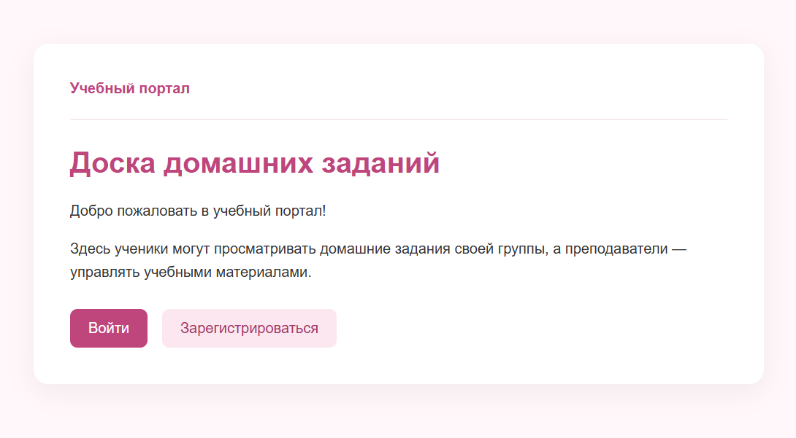
Рисунок 1 - Главная страница сайта с приветствием и кнопками входа и регистрации.
Основные представления (views)
Представления в homework/views.py обрабатывают HTTP-запросы, проверяют данные и права пользователя, обращаются к моделям через Django ORM и передают результат в шаблоны. После успешного сохранения формы обычно выполняется перенаправление на соответствующую страницу.
| Представление | Назначение |
|---|---|
index() |
Показывает стартовую страницу гостю, а авторизованного пользователя перенаправляет в раздел его роли. |
register() |
Проверяет форму регистрации, создаёт пользователя и профиль ученика, выполняет вход. |
login_view() |
Проверяет логин и пароль через AuthenticationForm и авторизует пользователя. |
logout_view() |
Завершает сессию по защищённому POST-запросу и возвращает на главную страницу. |
homeworks() |
Получает задания группы ученика, применяет поиск, фильтры и пагинацию, добавляет его статусы и оценки. |
homework_detail() |
Показывает отдельное задание своей группы и собственный ответ; при POST-запросе проверяет и сохраняет новую сдачу. |
teacher() |
Показывает собственные задания преподавателя с поиском, фильтрами группы, дисциплины и статуса проверки и пагинацией. |
teacher_homework_form() |
Создаёт задание от имени текущего преподавателя либо редактирует его собственное задание, если передан pk. |
teacher_submissions() |
Показывает ответы учеников на выбранное собственное задание преподавателя. |
teacher_grade() |
Проверяет форму оценки и разрешение преподавателя, изменяет только оценку ответа на его задание. |
grades() |
Проверяет доступ к группе и формирует строки учеников, столбцы заданий и значения оценок для журнала. |
В списках ученика и преподавателя используется общая вспомогательная функция paginate_homeworks(). Она делит уже отфильтрованную выборку на страницы по пять заданий и подготавливает параметры для ссылок перехода. Самостоятельного HTTP-маршрута у этой функции нет.
Основные шаблоны пользовательского интерфейса
Пользовательские шаблоны находятся в templates/jinja2/homework/. Представления передают в них формы, задания, ответы и данные журнала для формирования HTML-страниц.
| Шаблон | Назначение |
|---|---|
base.html |
Общая основа страниц: название портала, навигация, выход и подключение CSS. |
index.html |
Стартовая страница с приветствием и основными кнопками входа и регистрации. |
register.html |
Форма самостоятельной регистрации ученика и выбор группы. |
login.html |
Общая форма входа по логину и паролю. |
homeworks.html |
Кабинет ученика: группа, поиск, фильтры и карточки заданий со статусами и оценками. |
homework_detail.html |
Полные сведения о задании и форма отправки либо просмотр сохранённого ответа ученика. |
teacher.html |
Кабинет преподавателя: его задания, фильтры и переходы к созданию, редактированию, ответам, журналу и Django Admin. |
teacher_homework_form.html |
Общая страница формы создания и редактирования домашнего задания. |
teacher_submissions.html |
Список ответов учеников со статусами, оценками и переходом к оцениванию. |
teacher_grade.html |
Просмотр работы ученика и форма выставления или изменения оценки. |
grades.html |
Таблица успеваемости группы; для преподавателя также выбор доступной группы. |
3. Проектирование базы данных
Для учётных записей используется стандартная модель Django User. В ней хранятся логин, имя, фамилия, электронная почта, хеш пароля и признаки административного доступа. В приложении homework определены пять собственных моделей.
Сводная таблица моделей и связей
| Модель | Основные поля | Назначение и связи |
|---|---|---|
User |
username, first_name, last_name, email, password, is_staff, is_superuser |
Стандартная учётная запись Django; password хранит хеш. С StudentProfile связана один к одному. Один пользователь может быть преподавателем многих Homework либо автором многих Submission. |
StudentProfile |
user, patronymic, study_group |
Профиль ученика. user связывает его с одной учётной записью, а study_group указывает одну группу, в которой может быть много профилей. |
StudyGroup |
group_name |
Справочник учебных групп с уникальными названиями. Одна группа объединяет много StudentProfile и имеет много назначенных Homework. |
Subject |
subject_name |
Справочник дисциплин с уникальными названиями. Одна дисциплина связана со многими заданиями Homework. |
Homework |
subject, teacher, study_group, issue_at, deadline, description, penalty_info |
Задание одной дисциплины, одного преподавателя и одной группы. Может иметь много ответов Submission. |
Submission |
student, homework, answer_text, submitted_at, grade |
Ответ одного ученика на одно задание с временем отправки и оценкой. Каждая из двух связей со стороны ученика и задания имеет тип один ко многим; пара student и homework уникальна. |
Связь «один к одному» означает, что одному пользователю соответствует не более одного профиля ученика. При связи «один ко многим» одна запись, например учебная группа, может быть связана с несколькими записями другой модели, например профилями учеников.
Модель StudyGroup
Модель StudyGroup представляет учебную группу. Её основное поле group_name содержит уникальное название группы. На эту модель ссылаются профили учеников и назначенные группе домашние задания.
Модель Subject
Модель Subject хранит дисциплину. Поле subject_name содержит её уникальное название. Одна дисциплина может иметь несколько домашних заданий.
Модель StudentProfile
Модель StudentProfile дополняет стандартного пользователя данными ученика:
userсвязь один к одному сUser;patronymicотчество;study_groupссылка на учебную группу.
Имя, фамилия и электронная почта остаются в User и не дублируются в профиле.
Модель Homework
Модель Homework содержит сведения о домашнем задании:
subjectдисциплина;teacherпользователь, указанный преподавателем;study_groupгруппа, которой назначено задание;issue_atдата выдачи;deadlineсрок сдачи;descriptionтекст задания;penalty_infoинформация о штрафах, которая может отсутствовать.
Период выполнения определяется датой выдачи и сроком сдачи. Отдельное поле для его дублирования не создаётся. Метод Homework.clean() проверяет, что дедлайн не предшествует дате выдачи, а преподаватель имеет признак is_staff=True.
Модель Submission
Модель Submission связывает ученика с конкретным заданием и хранит результат сдачи:
studentпользователь, отправивший работу;homeworkдомашнее задание;answer_textтекст ответа;submitted_atавтоматически записываемые дата и время отправки;gradeоценка от 2 до 5, которая до проверки может быть пустой (NULL).
Для пары student и homework задано ограничение уникальности unique_student_homework_submission. Оно запрещает создание нескольких сдач одного задания одним учеником. В Submission.clean() проверяются наличие профиля ученика, отсутствие у автора признака преподавателя и совпадение группы ученика с группой задания.
Связи между моделями и миграции
Основные связи структуры данных:
User-StudentProfile: один к одному;StudyGroup-StudentProfile: один ко многим;Subject-Homework: один ко многим;User-Homework: один ко многим, преподаватель и его задания;StudyGroup-Homework: один ко многим;User-Submission: один ко многим, ученик и его ответы;Homework-Submission: один ко многим, задание и отправленные работы.
Таким образом, Submission позволяет хранить отдельный ответ и отдельную оценку для каждого ученика по каждому заданию. Оценки не копируются в Homework, а статусы сдачи вычисляются по существующим данным.
Создание таблиц и изменение их структуры выполняются миграциями Django. Основные команды работы с миграциями:
python manage.py makemigrations
python manage.py migrate
Записи сохраняются в PostgreSQL через Django ORM. Собственные таблицы приложения имеют имена homework_studygroup, homework_subject, homework_studentprofile, homework_homework и homework_submission.
4. Реализация авторизации и разграничения прав
В приложении используется общая система авторизации Django. Отдельные модели ролей или разные формы входа для ученика и преподавателя не создаются. Права определяются по текущему пользователю, признакам is_staff и is_superuser, связанному профилю и стандартным разрешениям Django.
Регистрация ученика
Страница /register/ использует форму StudentRegistrationForm, основанную на UserCreationForm. Пользователь указывает логин, имя, фамилию, отчество, электронную почту, учебную группу и дважды вводит пароль. Список групп загружается из StudyGroup, поэтому произвольное название группы вводить нельзя.
Форма проверяет обязательные поля, уникальность логина, формат почты, пароли и выбранную группу. При успешной регистрации обработчик register() создаёт User и связанный StudentProfile внутри одной транзакции. Новому пользователю явно задаются is_staff=False и is_superuser=False; выбора административной роли в форме нет. Пароль сохраняется средствами Django в виде хеша.
После регистрации ученик автоматически авторизуется и переходит к домашним заданиям своей группы.
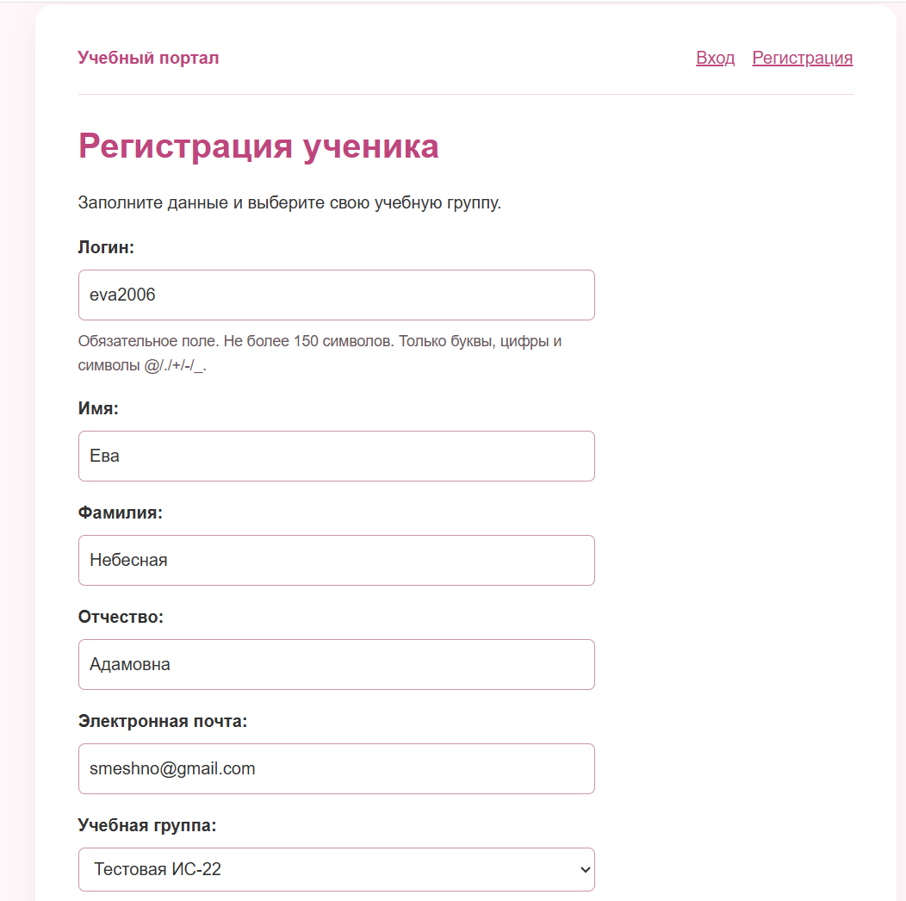
Рисунок 2 - Ввод данных ученика и выбор существующей учебной группы при регистрации.
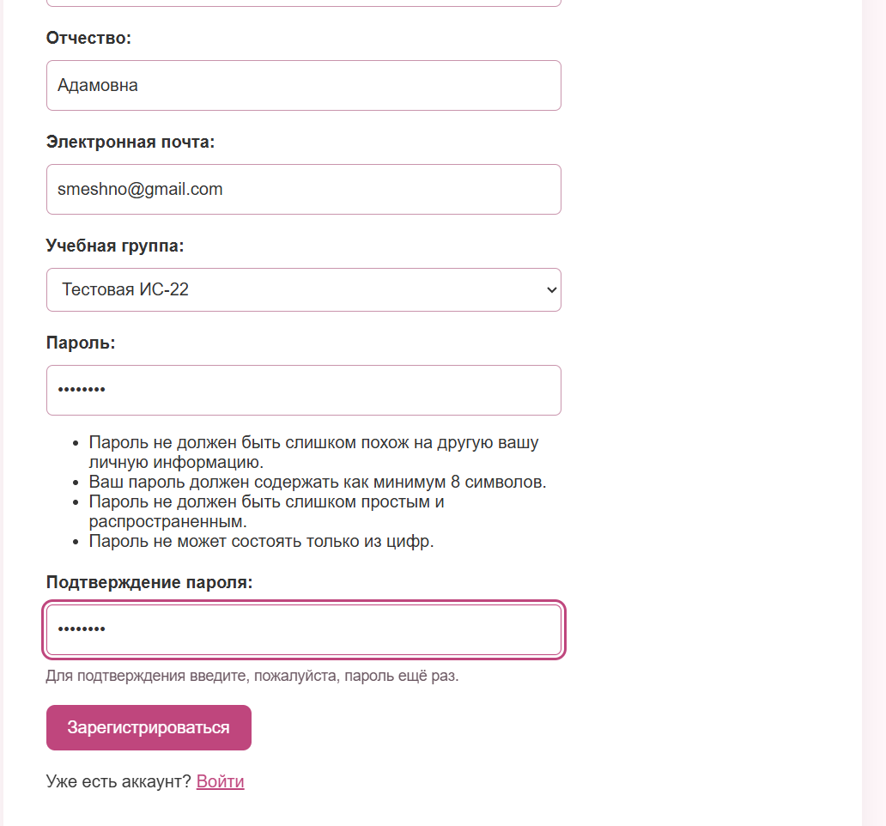
Рисунок 3 - Поля пароля, подтверждения пароля и кнопка завершения регистрации.
Вход преподавателя, ученика и администратора
Страница /login/ использует стандартную AuthenticationForm и содержит только логин и пароль. После входа обработчик главной страницы определяет направление перехода: ученик попадает на /homeworks/, преподаватель - на /teacher/, суперпользователь - в Django Admin.
Преподаватель не регистрируется самостоятельно. Его учётную запись создаёт или настраивает администратор через Django Admin, устанавливая is_staff=True, is_superuser=False и необходимые разрешения на модели. Например, для создания заданий требуется homework.add_homework, а для оценивания - homework.change_submission. Преподаватель может работать с разными учебными группами и не нуждается в StudentProfile.
Суперпользователь имеет полный доступ к административной панели, пользователям и данным приложения. Для него не создаётся отдельная пользовательская административная панель.
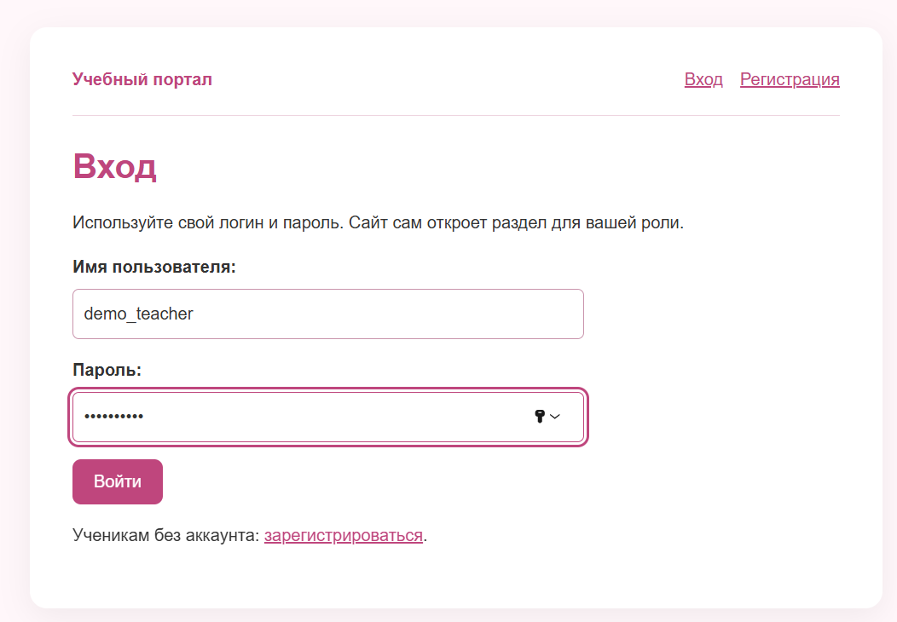
Рисунок 4 - Общая форма авторизации; на примере введён логин преподавателя.
Проверки доступа и выход
Защищённые обработчики используют login_required. Проверки выполняются в Python-коде: ученик должен иметь StudentProfile, а преподаватель - признак is_staff и разрешение на соответствующее действие. Для преподавательских операций используется функция check_teacher_access(). В шаблонах также скрываются действия, недоступные текущему пользователю.
Выход выполняется обработчиком logout_view() через POST-запрос с CSRF-защитой. В пользовательских Jinja2-формах используется {{ csrf_input }}. После завершения сессии открывается стартовая страница, а защищённые разделы снова требуют входа.
5. Интерфейс ученика
Список домашних заданий
После входа ученик открывает страницу /homeworks/. Она содержит приветствие, название его учебной группы, ссылку на журнал оценок, форму поиска и фильтров и карточки домашних заданий.
Обработчик homeworks() определяет группу через request.user.student_profile.study_group. Из PostgreSQL выбираются задания всех дисциплин, назначенные этой группе. Передача идентификатора другой группы в параметрах запроса не меняет эту выборку.
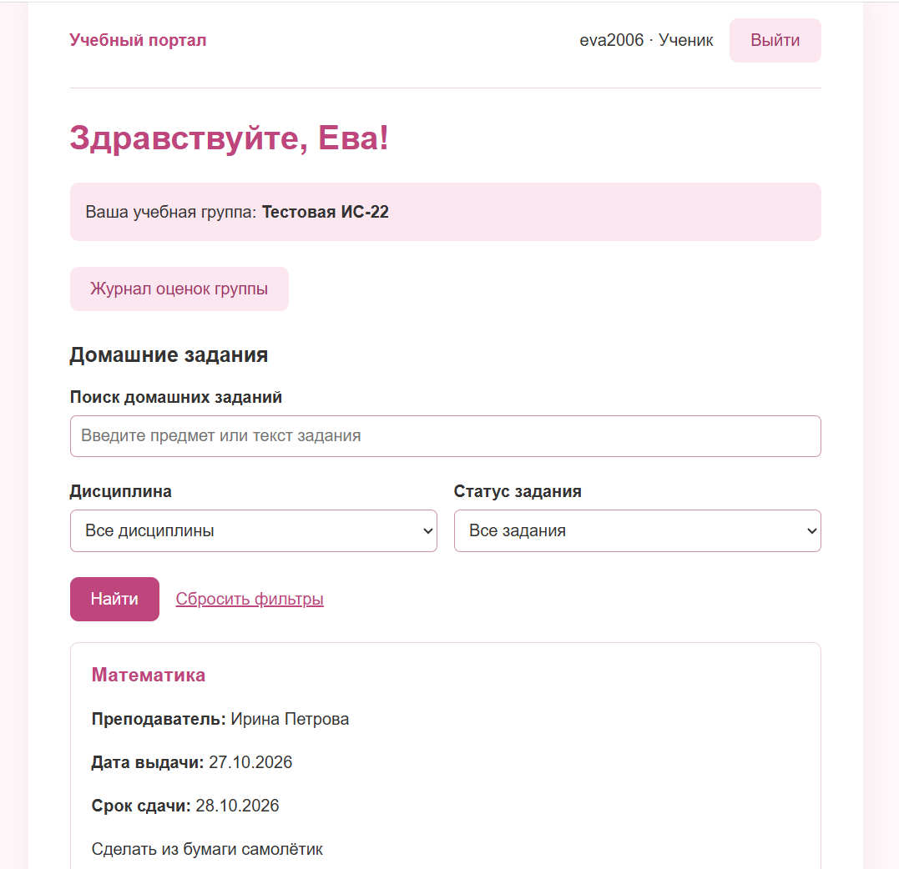
Рисунок 5 - Страница ученика с названием группы, переходом в журнал и фильтрами домашних заданий.
Карточка содержит дисциплину, преподавателя, дату выдачи, срок сдачи, описание, штрафы, собственный статус сдачи и оценку ученика. Для перехода к полному заданию предусмотрена кнопка «Подробнее».
Статус вычисляется функцией get_submission_status(). Если ответа нет, выводится «Не сдано» либо «Не сдано, срок истёк». Для отправленного ответа показывается «Сдано в срок» или «Сдано с опозданием».
Функция get_grade_display() выводит прочерк для несданной работы, «На проверке» для ответа без оценки и числовое значение после проверки преподавателем. На карточках используются только собственные записи Submission текущего пользователя.
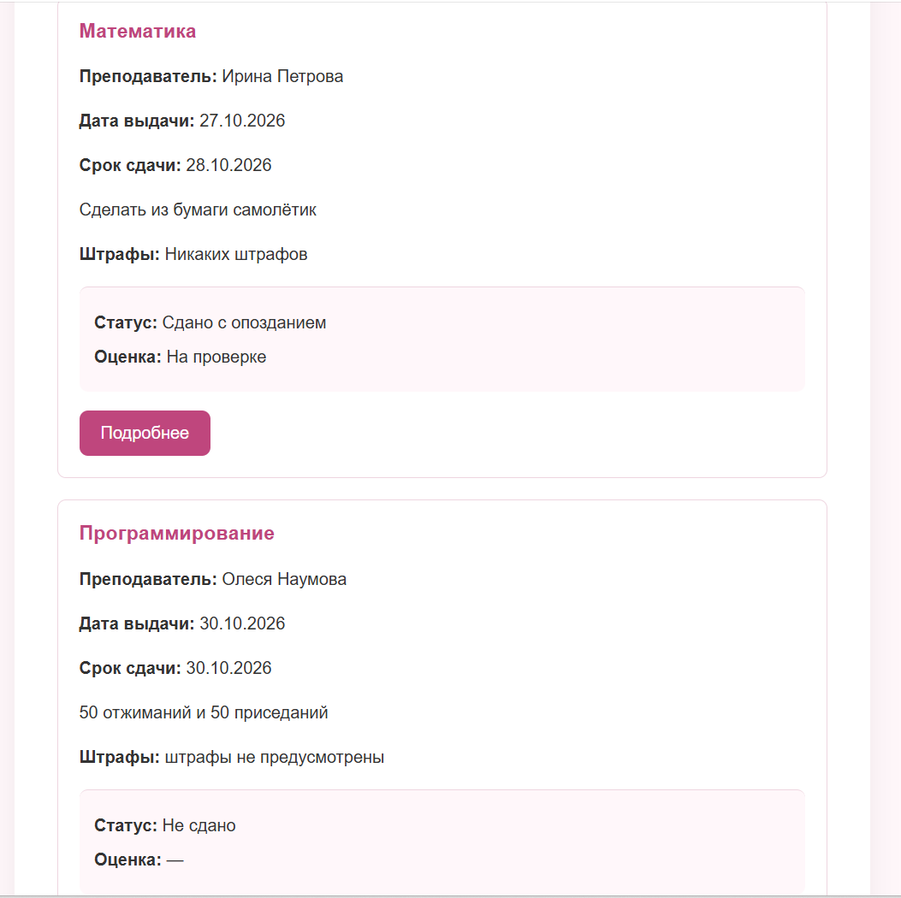
Рисунок 6 - Карточки заданий с разными состояниями: ответ на проверке и работа без отправленного ответа.
Просмотр задания и отправка ответа
Отдельная страница /homeworks/<pk>/ формируется обработчиком homework_detail(). На ней показаны полные сведения о задании и блок «Мой ответ». Пока ответ не отправлен, в этом блоке доступна форма SubmissionForm с многострочным текстовым полем и кнопкой «Сдать задание».
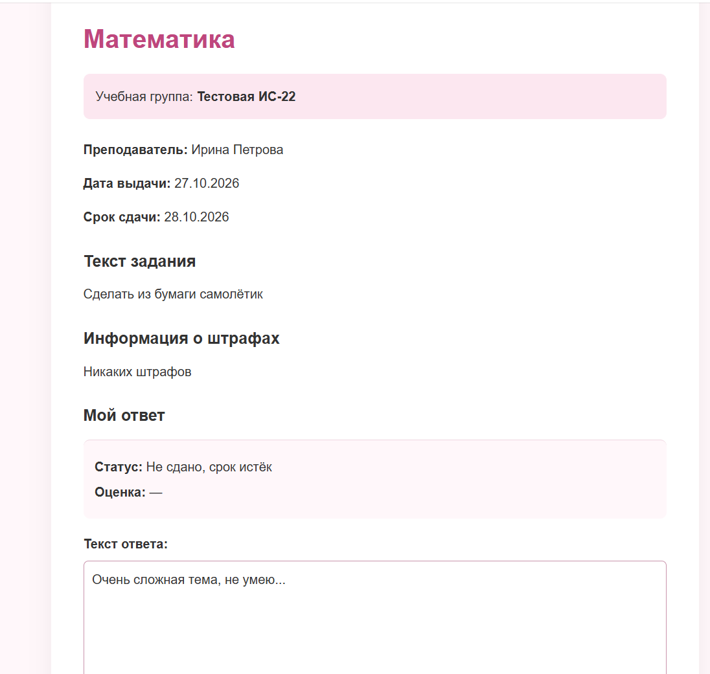
Рисунок 7 - Просмотр полного задания и заполнение текстового ответа после истечения дедлайна.
При отправке проверяются авторизация, роль ученика, наличие профиля, принадлежность задания его группе, непустой текст и отсутствие предыдущей сдачи. Автор определяется через request.user, а задание — по защищённому маршруту. Поля автора, времени и оценки ученик не выбирает.
Перед сохранением вызывается валидация модели. Затем в таблице homework_submission создаётся запись с текстом ответа, автоматически установленным временем отправки и пустой оценкой. После успешного POST-запроса выполняется перенаправление на ту же страницу задания.
После сдачи форма заменяется сохранённым ответом, датой и временем отправки, статусом и оценкой. Повторная отправка, редактирование и удаление ответа через ученический интерфейс не предусмотрены.
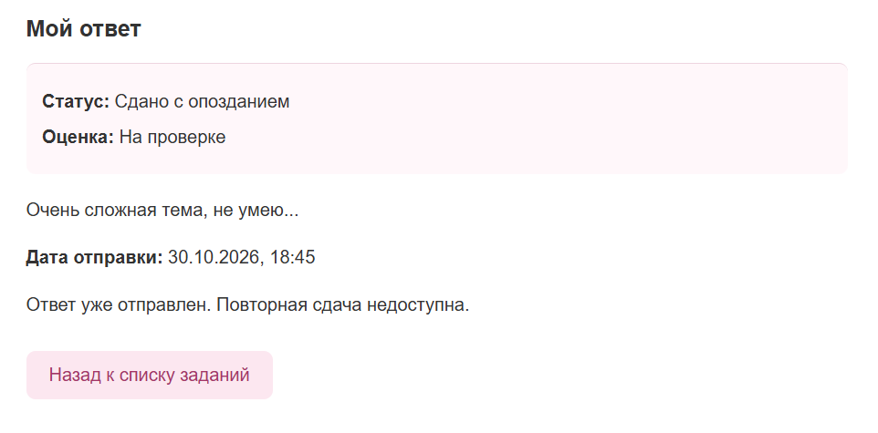
Рисунок 8 - Сохранённый ответ, время отправки и статус «Сдано с опозданием».
Дедлайн включает весь календарный день. Для сравнения с submitted_at используется локальная дата Django, полученная через timezone.localdate(). В текущих настройках проекта выбран часовой пояс UTC. Просроченные ответы разрешены; автоматического снижения оценки нет, штрафы остаются текстовой информацией для преподавателя.
При прямом открытии задания по идентификатору get_object_or_404() также ограничивает выборку группой ученика. Чужое или несуществующее задание возвращает 404. Тексты ответов других учеников на этой странице не отображаются. Для возврата предусмотрена ссылка «Назад к списку заданий».
6. Интерфейс преподавателя и Django Admin
Кабинет и управление заданиями
Кабинет преподавателя расположен по маршруту /teacher/. Он содержит приветствие, кнопки создания задания и перехода в Django Admin, отдельный переход в журнал и раздел «Мои домашние задания».
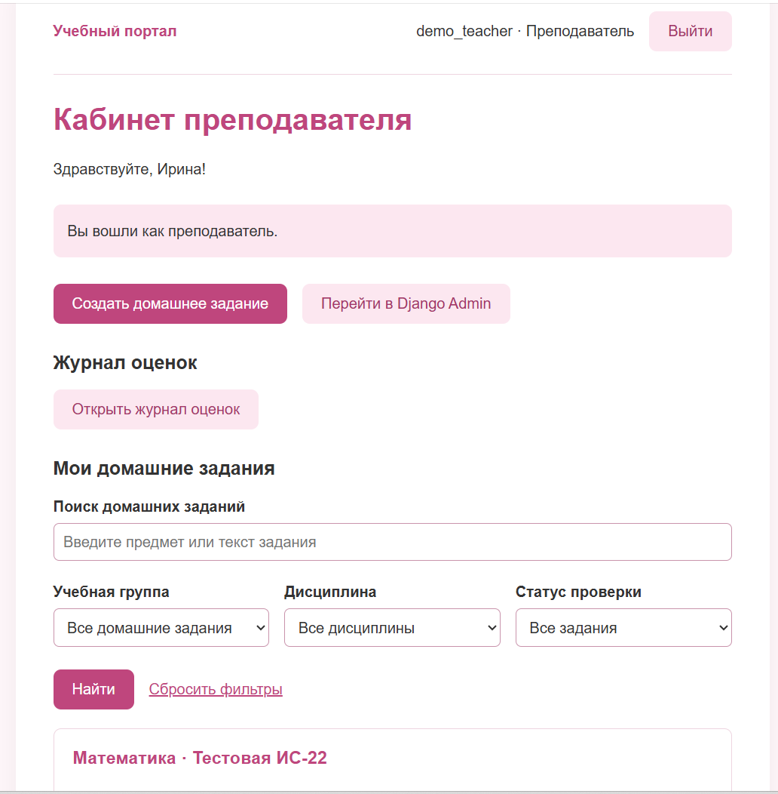
Рисунок 9 - Кабинет преподавателя с основными действиями и общей формой поиска и фильтрации.
В список включаются только задания, у которых Homework.teacher совпадает с текущим пользователем. На карточке отображаются дисциплина, группа, краткое описание, даты, количество отправленных ответов и действия «Посмотреть ответы» и «Редактировать». Доступность действий зависит от разрешений преподавателя.
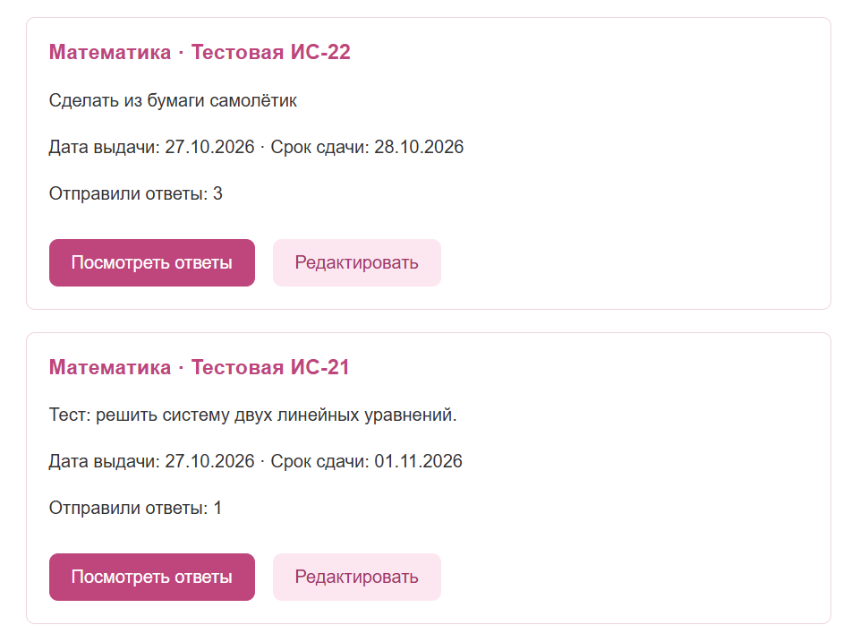
Рисунок 10 - Задания одного преподавателя для разных учебных групп и кнопки работы с ними.
Создание выполняется на /teacher/homeworks/create/. Форма HomeworkForm содержит дисциплину, учебную группу, дату выдачи, срок сдачи, описание и информацию о штрафах. Дисциплина и группа выбираются из существующих записей PostgreSQL. Преподаватель в форме не выбирается: обработчик teacher_homework_form() задаёт teacher=request.user.
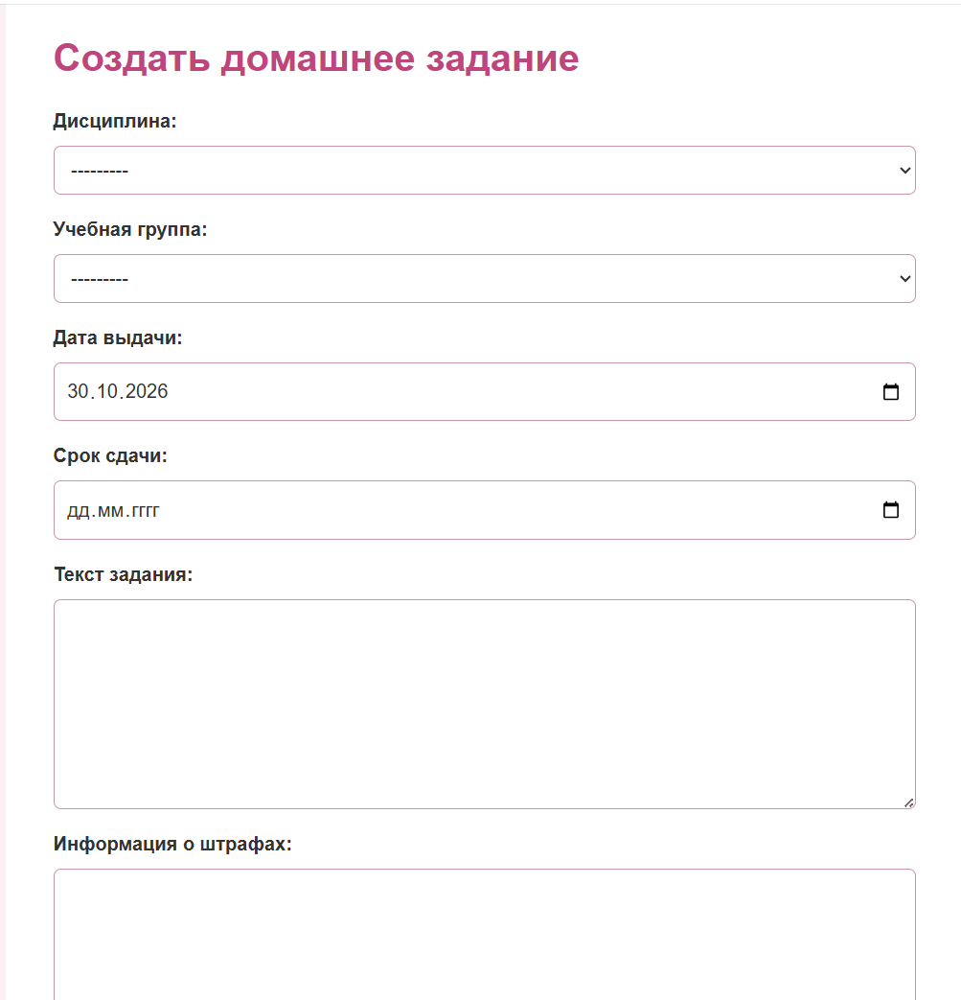
Рисунок 11 - Выбор дисциплины и группы, заполнение дат, описания и штрафов при создании задания.
Для изменения используется /teacher/homeworks/<pk>/edit/ и тот же обработчик формы. Открыть и изменить можно только собственное задание. После появления хотя бы одной сдачи группа, дисциплина и даты блокируются на сервере; текст задания и штрафы остаются доступными для редактирования. Это сохраняет принадлежность уже отправленных работ и смысл их статусов.
Ответы учеников и оценивание через сайт
Кнопка «Посмотреть ответы» открывает /teacher/homeworks/<pk>/submissions/. Обработчик teacher_submissions() показывает ответы на выбранное собственное задание: имя ученика, текст работы, время отправки, своевременность сдачи и текущую оценку. Для задания другого преподавателя доступ к этой странице запрещён выборкой по владельцу.
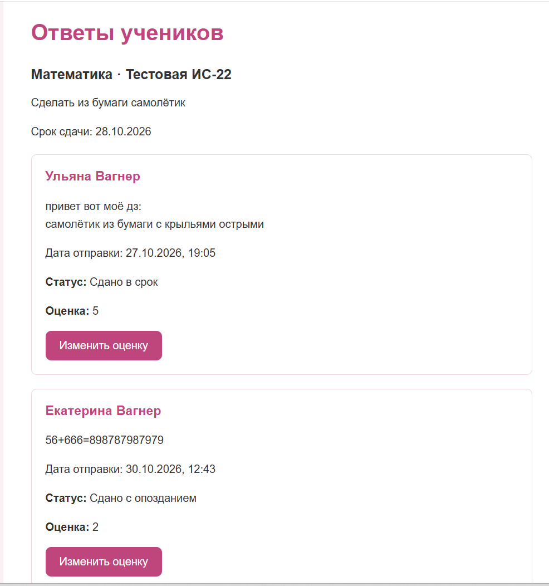
Рисунок 12 - Своевременный и просроченный ответы учеников с оценками и действиями для их изменения.
По кнопке «Оценить» или «Изменить оценку» открывается /teacher/submissions/<pk>/grade/. Страница содержит сведения о работе и форму GradeForm, в которой доступно только поле grade. Проверяются разрешение homework.change_submission, принадлежность задания преподавателю и допустимость оценки от 2 до 5.
Обработчик teacher_grade() сохраняет только Submission.grade. Автор, текст и время отправки ответа не изменяются. После сохранения преподаватель возвращается к списку ответов, где отображается сообщение об успешном оценивании. Ученик видит новое значение при следующей загрузке карточки или страницы задания.
Стандартная административная панель
Административная панель доступна по /admin/. В homework/admin.py зарегистрированы StudyGroup, Subject, StudentProfile, Homework и Submission. Для списков настроены стандартные list_display, list_filter и search_fields.
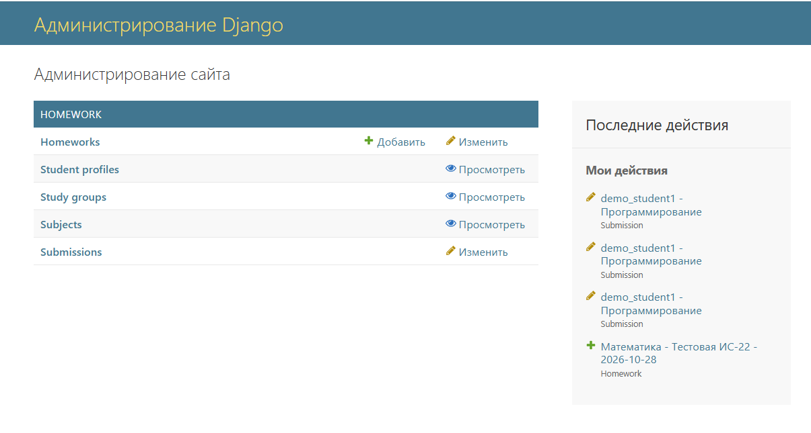
Рисунок 13 - Главная страница стандартной Django Admin с разделами приложения и доступными преподавателю действиями.
Выставление оценок через Django Admin сохранено в соответствии с условием варианта. Преподаватель с необходимыми правами открывает раздел Submissions, выбирает работу, изменяет grade и сохраняет запись. Здесь используется то же поле Submission.grade, что и в обычном кабинете, поэтому оценки между интерфейсами не дублируются.
В HomeworkAdmin выборка обычного преподавателя ограничена собственными заданиями. В SubmissionAdmin ему доступны только ответы на эти задания; автор, задание, текст и время ответа доступны только для чтения. Ограничения действуют также при прямом открытии URL. Суперпользователь сохраняет полный доступ ко всем объектам.
7. Журнал успеваемости
Страница /grades/ предназначена для просмотра оценок учебной группы. Её формирует обработчик grades(), а представление таблицы находится в шаблоне grades.html.
Таблица строится по следующему принципу:
- строки - все ученики выбранной группы;
- столбцы - отдельные домашние задания этой группы;
- ячейки - оценки соответствующих учеников за соответствующие задания.
В заголовке столбца указываются дисциплина, номер задания на основе его идентификатора и срок сдачи. Несколько заданий одного предмета имеют отдельные столбцы. Если сдачи нет или её оценка равна None, выводится прочерк «—».
Список учеников получается из StudentProfile, поэтому в журнале присутствуют и ученики без отправленных работ. Задания выбираются из Homework, а оценки - из Submission. Обработчик формирует словарь по паре идентификаторов ученика и задания и обычными циклами собирает строки таблицы. Отдельной модели журнала и копирования оценок нет.
Ученики сортируются по фамилии, имени и идентификатору пользователя. Задания - по дисциплине, дедлайну и идентификатору. Для широкой таблицы предусмотрена горизонтальная прокрутка.
Журнал ученика
Ученик открывает журнал кнопкой «Журнал оценок группы». Группа определяется только по его профилю. Он видит оценки всех учеников своей группы, а собственная строка выделяется. Тексты чужих ответов, электронные адреса и пароли в таблицу не передаются. Запрос журнала другой группы отклоняется на сервере.
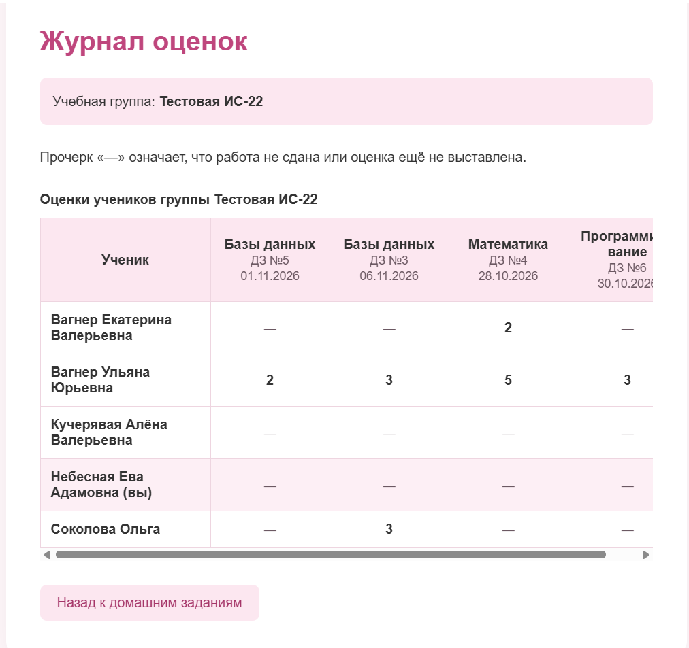
Рисунок 14 - Журнал своей группы: ученики, отдельные задания, оценки, прочерки и выделенная строка текущего пользователя.
Журнал преподавателя
Преподаватель открывает журнал отдельной кнопкой из кабинета. Ему доступны группы, которым он назначил хотя бы одно задание, при наличии разрешений на просмотр заданий и сдач. После выбора группы таблица обновляется обычным GET-запросом: выпадающий список автоматически отправляет форму.
В журнале доступны все задания выбранной группы, в том числе задания других преподавателей. Ссылка «Посмотреть ответы» показывается только для собственных заданий текущего преподавателя. Журнал служит для просмотра: изменение оценок выполняется через существующие страницы проверки ответа или Django Admin.
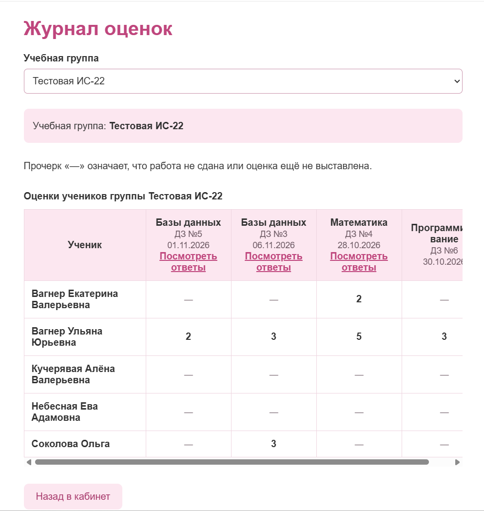
Рисунок 15 - Выбор доступной группы преподавателем и переход к ответам по собственным заданиям.
Для суперпользователя доступны журналы всех групп. При отсутствии учеников, заданий или доступных преподавателю групп выводятся соответствующие сообщения вместо ошибки страницы.
8. Поиск, фильтрация и пагинация
Поиск и совместная фильтрация
В списках ученика и преподавателя предусмотрено поле «Поиск домашних заданий» с подсказкой «Введите предмет или текст задания». Поиск выполняется средствами Django ORM по Subject.subject_name и Homework.description. Условия объединяются через Q, а icontains позволяет искать без учёта регистра.
Ученик может выбрать дисциплину и один из трёх вариантов статуса:
- «Все задания» - все доступные задания его группы;
- «Не сдано» - задания без собственной записи
Submission, независимо от дедлайна; - «Сдано» - задания с собственной записью
Submission, независимо от своевременности ответа и наличия оценки.
Эти упрощённые варианты фильтра не заменяют подробные статусы на карточках. У преподавателя вместо статуса личной сдачи используется статус проверки:
- «Все задания»;
- «Есть отправленные ответы»;
- «Нет отправленных ответов»;
- «Есть непроверенные ответы», то есть сдачи с
grade=None.
Дополнительно преподаватель выбирает учебную группу и дисциплину. В списке групп доступны только группы его собственных заданий, а по умолчанию выбран вариант «Все домашние задания». Дисциплины в обеих формах загружаются из PostgreSQL среди доступных пользователю заданий.
Поиск, группа, дисциплина и статус применяются совместно. Базовая выборка ученика всегда ограничена его группой, а преподавателя - его собственными заданиями. Поэтому параметры фильтров не позволяют получить чужие задания.
Для передачи условий используется одна GET-форма на каждой странице. Параметры имеют имена q, subject, status и, у преподавателя, group. Кнопка «Найти» отправляет поисковый запрос. Выпадающие списки автоматически отправляют ту же форму через onchange="this.form.submit()", сохраняя остальные введённые значения. Ссылка «Сбросить фильтры» открывает исходный список без условий.
Интерфейс фильтров ученика показан на рисунке 5, преподавателя - на рисунке 9.
Базовая пагинация
Пагинация реализована в функции paginate_homeworks() стандартным классом django.core.paginator.Paginator. На одной странице отображается 5 домашних заданий. Сначала применяются поиск и фильтры, затем задания сортируются по deadline и pk, после чего результат делится на страницы.
Под карточками выводятся элементы «Назад», «Страница N из M» и «Далее». На границах списка соответствующее направление недоступно. Если результат помещается на одной странице, блок переключения не показывается. Некорректный номер обрабатывается стандартным методом get_page() без ошибки сервера.
Номер страницы передаётся в параметре page. Для ссылок перехода создаётся копия request.GET, из неё исключается прежний page, а остальные параметры кодируются методом urlencode(). Поэтому русские буквы, пробелы и выбранные фильтры сохраняются при переходах. Например, при 12 найденных заданиях страницы содержат 5, 5 и 2 карточки одного и того же отфильтрованного списка.
В форме поиска и фильтров параметра page нет. При смене условия выполняется новый GET-запрос с первой страницы. Если подходящих заданий не найдено, выводится сообщение «По вашему запросу домашние задания не найдены», а пустой блок пагинации не отображается.
9. Заключение
В ходе лабораторной работы разработано веб-приложение «Доска домашних заданий» с использованием Django, PostgreSQL и Jinja2. Реализованы регистрация и авторизация учеников, просмотр заданий своей группы, однократная отправка текстовых ответов и отображение статусов и оценок. Преподавателю доступен кабинет для управления собственными заданиями, просмотра ответов и оценивания. При этом сохранена возможность выставлять оценки через стандартную Django Admin. На пользовательском сайте формируется журнал оценок всех учеников учебной группы. Поиск, совместная фильтрация и базовая пагинация помогают работать со списками домашних заданий, а CSS обеспечивает единое оформление страниц.